Real Estate Photography in Cape May Court House, NJ: 205 St Andrews Dr
About this Cape May Court House listing shoot
Listing Pixl provided professional real estate photography for this Cape May Court House, New Jersey property at 205 St Andrews Dr 08210. Staged twilight shots and drone aerials in Cape May Court House. The shoot was booked by Jason Ruffenach of eXp Realty to give the listing scroll-stopping photos for the MLS, Zillow, and social media.
This townhome on St Andrews Dr in Cape May Court House got the full treatment: a virtual twilight of the townhome row, bright interiors and drone aerials of the community. Inside, the two-story living room with its gas fireplace, the kitchen, the dining room and the primary suite with its balcony and soaking tub were the highlights.

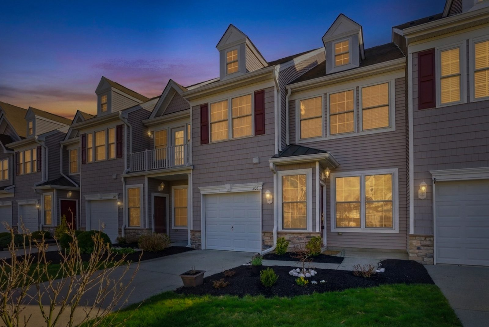

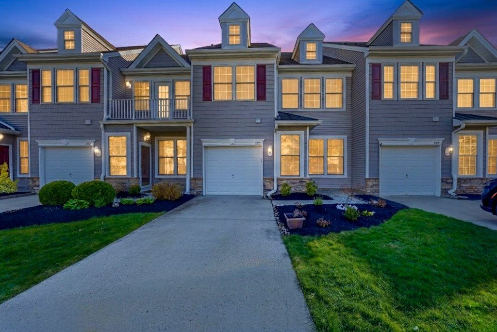

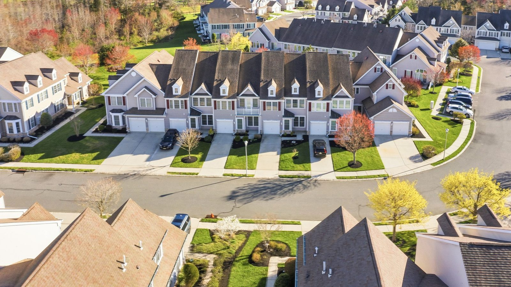

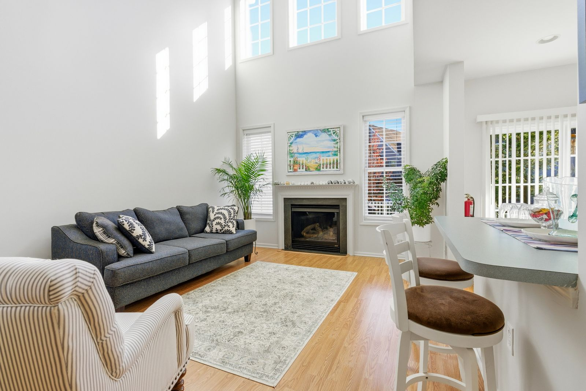

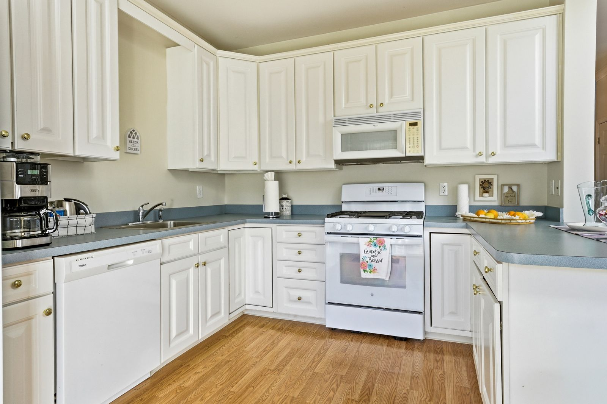

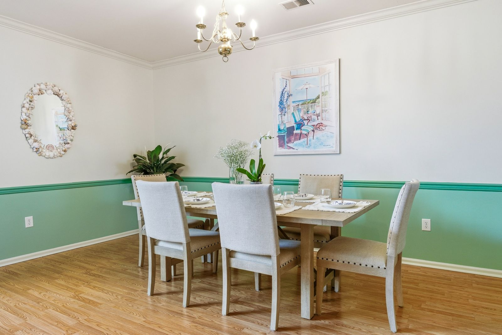

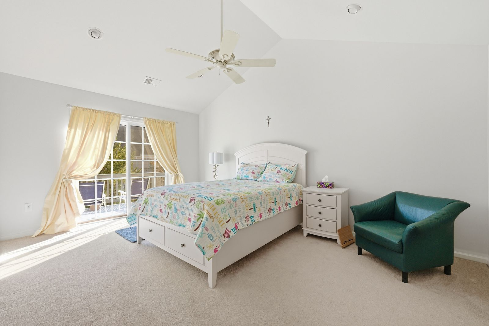

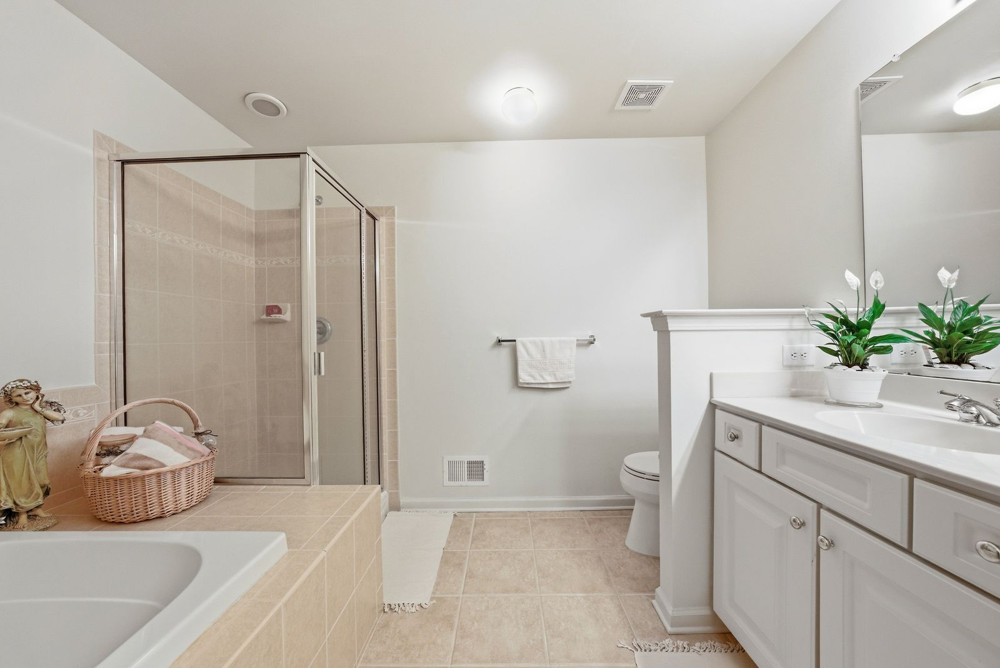

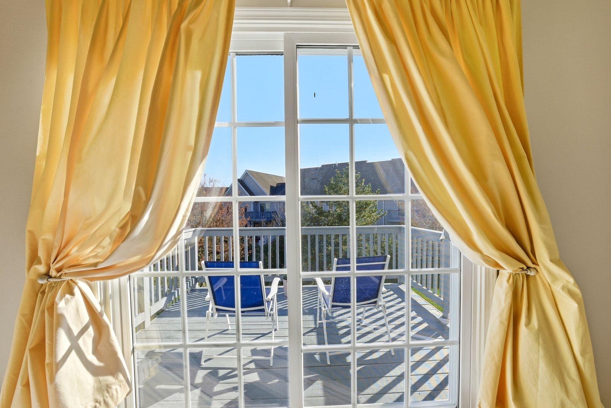

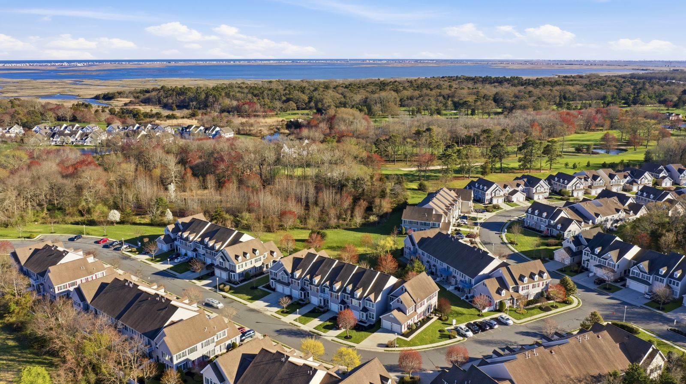

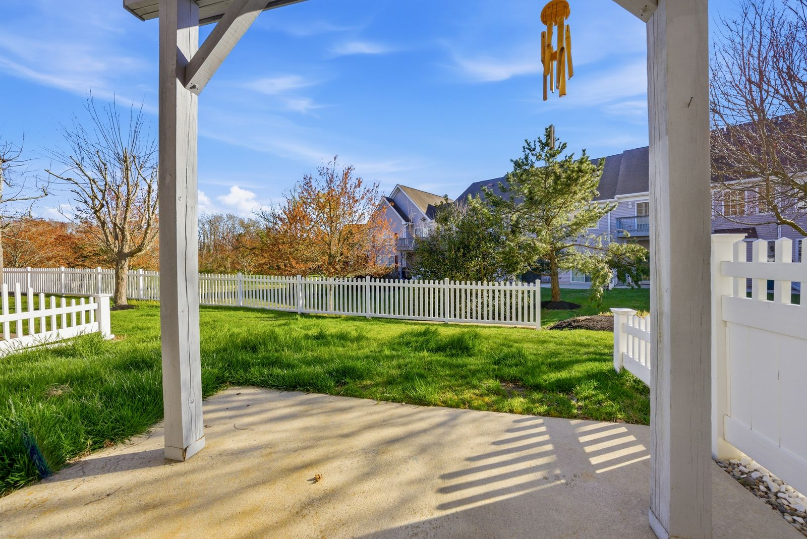
What we photographed
- Virtual twilight of the townhome row
- Two-story living room with gas fireplace
- Kitchen and dining room
- Primary bedroom, balcony and primary bathroom
- Drone aerials of the townhome community
Real estate photography services delivered
This Cape May Court House NJ shoot included HDR listing photography with professional editing and color correction, delivered next-day and sized ready for the MLS. Drone aerial photography showed the lot, the setting, and the surrounding Cape May Court House neighborhood — the views that make South Jersey listings stand out online.
Real estate photography in Cape May Court House, NJ
Cape May Court House is the county seat in Middle Township, offering more land and newer neighborhoods than the barrier islands while staying a short drive from the beaches. Larger lots, pools and townhome communities are common here, and drone views are the best way to show the space.
See packages, FAQs and every shoot in town on our Cape May Court House, NJ real estate photographer page.
More shoots near Cape May Court House
Lock In a Cape May Court House, NJ Real Estate Photographer
Selling in Cape May Court House or anywhere in Cape May County? Listing Pixl shoots across Cape May Court House, Swainton, Rio Grande, Wildwood, Stone Harbor, Dennisville, and surrounding South Jersey towns. Compare our current packages online. Call or text (609) 780-7027 or lock in your shoot online.